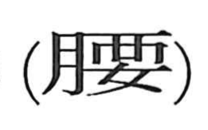

腰

Kun: koshi | On: yo
waist ・ hip
Explanation
A phono‑semantic character: the semantic element 月 marks a body part, while 要 serves as the phonetic. In early forms, 要 depicted a woman’s hipbones and originally named the waist itself. When 要 later took on the abstract sense of “pivot” or “essential,” a new graph was coined to retain the bodily meaning by adding the flesh classifier, producing 腰 for “waist.” This form was established during the Six Dynasties (third to sixth century CE).